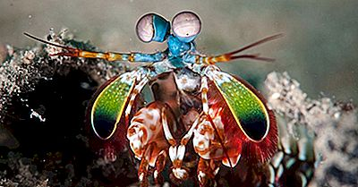
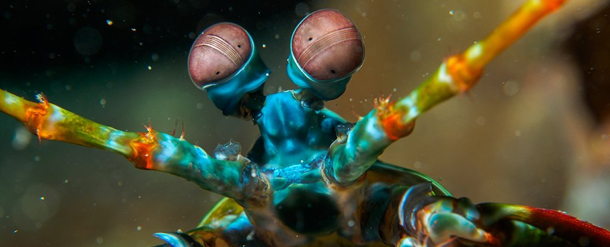
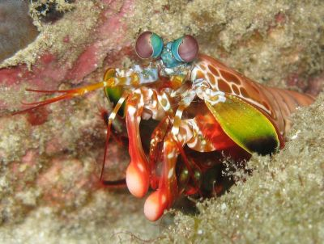

Stamatopoda
Fatos sobre o Stamatopoda
Stomatopoda (ou estomatópode),(Odontodactylus scyllarus) chamados popularmente de tamarutacas ou de lacraias-do-mar no Brasil, é uma ordem de crustáceos marinhos da subclasse Hoplocarida, que agrupa cerca de 400 espécies, caracterizadas principalmente pela morfologia da segunda pata torácica, que é modificada em apêndice subquelado, lembrando uma pata de louva-a-deus.
| Filo: Arthropoda | Subfilo: Crustacea | Classe: Malacostraca | Subclasse: Hoplocarida | Ordem: Stomatopoda | Latreille, 1817 |
|---|
Boxeadores da Natureza:
As maiores esmagadoras, tais como exemplares de Odontodactylus scyllarus, são capazes de desferir um dos mais rápidos e violentos golpes do reino animal, um soco que pode apresentar a velocidade de um tiro calibre .22 (equivalente a 720km/h) e uma força de impacto de 60 kg/cm². Essa força esmagadora é a responsável pelo seu título de "lagosta-boxeadora" e é capaz de facilmente quebrar a carapaça de um caranguejo, as conchas duras e calcificadas de gastrópodes ou até mesmo quebrar o vidro reforçado de um aquário.

Super Visão!
Com olhos que funcionam também de maneira independente,esses animais possuem o mais complexo sistema de visão de cores do mundo animal, pois 12 cores primárias, correspondentes aos 12 pigmentos distintos presentes em sua retina.Além de capazes de interpretar polarização no espectro ultravioleta e infravermelho, o que os torna predadores muito eficientes na hora de localizar e capturar suas presas.

Os Stomatopodas são fashions!
Esta espécie é um dos maiores e mais coloridos estomatópodes que existem,com espécimes que podem ter até 5 cores pelo corpo.São nativos da região Indo-Pacífica, desde o Guam até à África oriental, e vivem em regiões tropicais e subtropicais.
